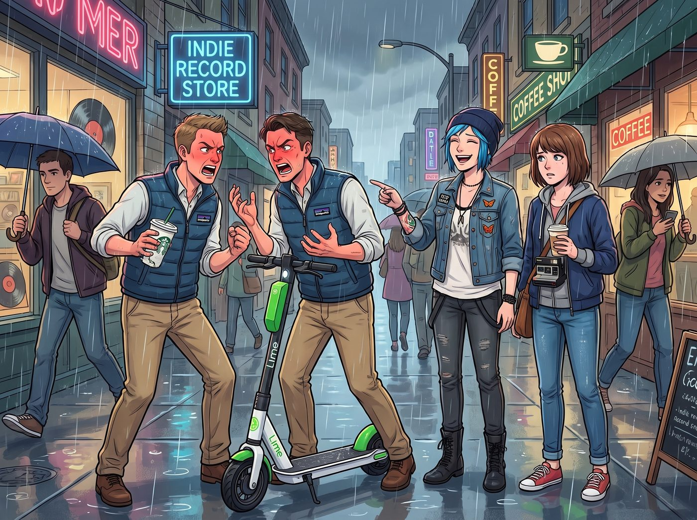
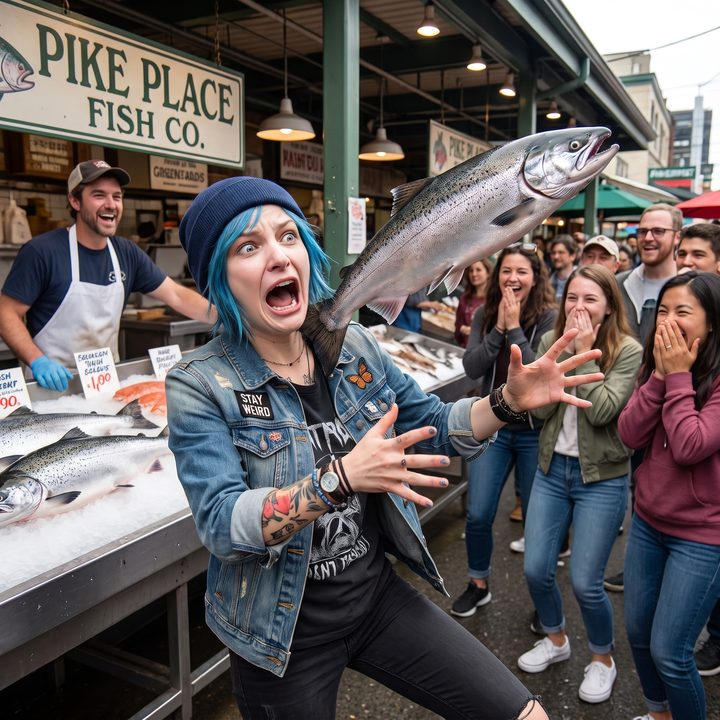

雙重護甲


那場短命的網紅生涯，已經正式退休了。頻道註銷，影片下架，品牌方的合約也一筆勾銷。二號車廂重新回到了沒有鏡頭、沒有流量、也沒有人要她們戴防毒面具拍廣告的日子。
但有些東西，是退休也退不掉的。比如 Chloe Price 骨子裡那份看熱鬧不嫌事大的基因。
秋天的西雅圖（Seattle），天空飄著標誌性的綿綿細雨。國會山莊（Capitol Hill）的街道上，Chloe 和 Max 剛剛從一家獨立唱片行出來，手裡還端著熱騰騰的燕麥奶拿鐵。
這本該是一個完美的、充滿文青氣息的約會下午。
直到前方的十字路口，爆發了一場充滿了「西雅圖特色」的街頭衝突。
兩個穿著 Patagonia 抓絨背心、看起來像是亞馬遜或微軟工程師的科技新貴（Tech Bros），因為一輛共享電動滑板車的擦撞，正在街頭激烈對罵。兩人的臉紅脖子粗，手裡的星巴克杯子捏得嘎吱作響，眼看著就要把代碼上的憤怒轉化為物理層面的街頭格鬥。
街頭霸王的「流量密碼」
面對這種即將見血的場面，正常人的反應是繞道而行。
但 Chloe Price 不是正常人。她骨子裡流淌著阿卡迪亞灣的街頭混混之血，以及對「唯恐天下不亂」的極致熱愛。
「哦呼！好戲開場了！」
Chloe 的眼睛瞬間亮得像探照燈。她毫不猶豫地把手裡的拿鐵塞進 Max 懷裡：「Maxine，拿好我的咖啡！這絕對是今天的流量密碼！」
只見這名藍髮街頭霸王不僅沒有後退，反而像個戰地記者一樣，興奮地往前湊了兩步。她以街頭混混的手速掏出 iPhone，打開相機，切換到超廣角鏡頭，甚至還熟練地開啟了 4K 60幀的錄影模式。
「打啊！用你的 iPad 砸他的頭！」Chloe 甚至下意識地開始了極度欠揍的實況轉播，聲音大得唯恐當事人聽不見，彷彿那個早就註銷的頻道還在線上，「各位 YouTube Shorts 的觀眾，歡迎來到西雅圖街頭角鬥場！左邊是『微軟雲端工程師』，右邊是『亞馬遜物流經理』，讓我們看看誰的薪水和拳頭更硬！」
攝影師的「緊急物理撤離」
抱著兩杯熱咖啡的 Max 站在原地，大腦裡的警報器正以 120 分貝的音量瘋狂作響。
作為一個曾經在無數個平行時空裡為了救 Chloe 而操碎了心的「時空攝影師」，Max 現在對任何形式的「無謂衝突」，都有著近乎本能的恐懼。
在 Max 的視角裡：這兩個男人一旦打起來 → Chloe 靠得太近 → Chloe 絕對會被流彈（或者飛過來的滑板車）擊中 → Chloe 會受傷甚至有生命危險 → 自己又得流著鼻血發動時光倒流來救這個白痴！
我經歷了龍捲風、世界末日和精神崩潰，絕對不是為了在西雅圖街頭，為了幾百個 YouTube 點閱率而再次撕裂時空連續體的！
「Chloe Price！！妳給我回來！！」
眼看著其中一個工程師已經注意到了正在舉著手機狂拍的 Chloe，並且憤怒地指著她吼道：「嘿！那個藍頭髮的！把手機放下！侵犯隱私信不信我告妳？！」
Chloe 毫不示弱地單手舉著手機，另一隻手囂張地比了個中指：「這裡是公共場合，老兄！有種你過來把我的手機吃下去啊！」
「夠了！」
就在衝突即將升級，那個工程師準備朝 Chloe 衝過來的千鈞一髮之際。
一股不屬於文青女孩的強大「怪力」，猛地從 Chloe 身後襲來。
Max 根本沒有使用超能力。
她直接爆發出了「護妻狂魔」的物理潛能。她將兩杯咖啡穩穩地夾在左臂，然後伸出右手，一把死死地揪住了 Chloe 皮夾克的後衣領，像是拖著一隻闖禍的大型哈士奇一樣，爆發出驚人的爆發力，直接將身高 175 公分的 Chloe 強行往後拖！
「哇啊啊！Max！等一下！鏡頭晃到了！我的完美構圖！」Chloe 猝不及防地被向後拖拽，雙腳在濕滑的西雅圖人行道上踉蹌著滑行。
「閉嘴！把影片刪掉！我們現在就走！」
Max 咬牙切齒地拖著 Chloe，以一種完全不符合她嬌小體型的霸氣，硬生生地把這隻還在試圖舉高手機的「街頭惡霸」拖進了旁邊的一條小巷子裡，徹底遠離了戰場。
巷子裡的訓話與「依賴」
直到確認那兩個工程師沒有追上來，Max 才鬆開了 Chloe 的衣領，氣喘吁吁地把咖啡塞回她手裡。
「妳是不是瘋了？！」Max 氣得臉頰鼓鼓的，清秀的眉毛倒豎了起來，「我們是來度週末的，不是來西雅圖警局做筆錄的！萬一那兩個人身上帶了武器怎麼辦？！」
「放輕鬆，Maxine～」
Chloe 揉了揉被勒疼的脖子，依然是一副嬉皮笑臉、毫不在乎的樣子。她喝了一口咖啡，然後湊近 Max，甚至還帶著點邀功的語氣：「怕什麼？就算我真的被那個 Nerd（書呆子）揍了一拳，不是還有妳嗎？我老婆可是能操縱時間的超級英雄啊！大不了妳就『唰』地一下倒轉時間，然後我們重新拍一個更好的角度嘛！」
聽到這句話，Max 氣得差點把手裡的拿鐵直接潑在 Chloe 臉上。
「聽清楚了，Chloe Price。」
Max 伸出一根手指，用力地戳在 Chloe 的皮夾克胸口上，一字一句地發出終極警告：
「我的時光倒流，是用來在世界末日救妳命的，是用來防止妳被火車撞的。它絕對、絕對不是用來讓妳的 YouTube Shorts 騙點閱率的！
如果妳再敢為了拍這種無聊的街頭打架而把自己置於危險之中，我就……」
「妳就怎樣？」Chloe 挑了挑眉，嘴角勾起一抹壞笑。
「我就用時光倒流，回到五分鐘前，然後親自把妳踹進西雅圖的下水道裡！」Max 惡狠狠地威脅道。
看著 Max 那副「雖然很兇但其實可愛到爆炸」的護妻模樣，Chloe 根本沒在怕。
相反地，街頭霸王心裡甚至產生了一種極度受用的暗爽。她就喜歡看 Max 為了她操心、為了她生氣、然後霸道地把她從危險裡拽出來的樣子。
「好啦好啦，聽妳的，超級英雄。」
Chloe 笑著舉起雙手投降，然後順勢將手臂搭在了 Max 的肩膀上，將她拉進自己懷裡，「影片我這就刪了。為了補償妳受驚的小心臟，本大爺請妳去吃派克市場（Pike Place Market）最貴的蛤蜊巧達濃湯，怎麼樣？」
「……這還差不多。還有，不准再盯著路人看了。」Max 靠在 Chloe 的肩膀上，終於卸下了防備，無奈地嘆了口氣。
在西雅圖的細雨中，這個總是唯恐天下不亂的藍髮女孩，最終還是乖乖地收起了手機，任由身邊那個嬌小的攝影師牽著自己，遠離了所有的紛擾與危險。畢竟，對 Chloe 來說，街頭的熱鬧再好看，也比不上身邊這個願意隨時把她從懸崖邊（或者街頭鬥毆中）拽回來的超級英雄。
又見麵包碗
西雅圖的細雨中，派克市場（Pike Place Market）的海鮮與奶油香氣交織在空氣裡。
剛才在街頭看戲被強行拖走的 Chloe，一踏進市場，目光就鎖定了前方那家著名的蛤蜊巧達濃湯店。一瞬間，新仇舊恨湧上心頭。她可沒有忘記高中時期在這個市場裡遭遇的「飛魚暗算」——當時 Max 偷偷塞小費給拋魚攤位的大叔，導致一條濕滑的三文魚毫無預警地朝她飛來。那個讓她發出嬌羞尖叫、差點跌進垃圾桶的瞬間，不僅被 Max 精準抓拍下了嘴巴張成 O 形的災難級表情，還成了她這輩子最大的黑歷史。
更讓街頭霸王屈辱的是，那張照片成了一場不平等條約的籌碼。Max 當時威脅要把照片洗成海報貼在皮卡車的後玻璃上，硬生生逼著她穿上一條碎花長裙，陪逛了一整個下午的舊書店。
「今天，就是阿卡迪亞灣復仇者聯盟反擊的日子。」Chloe 摸了摸下巴，嘴角勾起一抹極度反派的冷笑。
她讓 Max 先去旁邊的工藝品攤位逛逛，自己則自告奮勇去排隊買蛤蜊濃湯麵包碗。輪到她時，Chloe 趴在櫃台前，偷偷遞給店員一張十元美鈔，壓低聲音說：「兄弟，給我來一份熱湯，但外面的酸種麵包殼，給我挑一個你們店裡放了最久、最硬、硬到能砸碎核桃的那種。」
店員心領神會地遞給她一個宛如化石般的麵包碗。Chloe 敲了敲麵包殼，發出令人滿意的「咚咚」悶響。這硬度，絕對不亞於當年她們喝完湯後，Max 用粗麻繩綁在皮卡車尾備胎架上、並寫著「備用輪胎殼」的那個麵包碗。
「嘿，Maxine，熱騰騰的蛤蜊濃湯來了。」Chloe 雙手捧著那個「生化武器」，一臉殷勤地走到 Max 面前，遞給了她。而她自己手裡，則端著一個新鮮柔軟的正常麵包碗。
Max 接過麵包碗，指尖剛觸碰到外殼，眉毛就微微挑了一下。
她低頭看了一眼這個麵包，又抬頭看了一眼 Chloe 那張拼命壓抑著狂喜、等著看好戲的臉。作為一個能操縱時間的攝影師，Max 對細節的敏銳度遠超常人。她甚至不需要發動超能力，就能嗅出這場劣質陰謀的味道。
Max 不動聲色地端著碗，忽然轉過頭，指著 Chloe 身後的方向，語氣驚恐地大喊：「天啊！Chloe！那個拋魚大叔又把三文魚扔過來了！」
「什麼？！」
「飛魚陰影」瞬間發作，Chloe 幾乎是條件反射地發出一聲短促的驚呼，猛地縮起脖子，雙手抱頭往旁邊一蹲，生怕再次體驗那種濕滑冷冰冰的觸感。
就在 Chloe 蹲下的這零點五秒內。
Max 展現出了極致的手速，行雲流水地將自己手裡那個「化石麵包碗」，與 Chloe 放在長椅上的新鮮麵包碗，進行了無縫互換。
三秒後。
Chloe 意識到背後根本沒有飛來的魚，只有幾個遊客在看著她奇怪的蹲姿。
「Maxine Caulfield！妳居然還敢拿這件事嚇我！」Chloe 氣急敗壞地站起來，拍了拍皮夾克，為了掩飾尷尬，她豪邁地抓起長椅上的麵包碗，「本大爺不跟妳計較，我要享用我的美味濃湯了，妳就抱著妳那碗慢慢『啃』吧！」
說完，Chloe 為了展示自己作為 Alpha 的豪邁，張開大嘴，對著麵包碗的邊緣狠狠地咬了下去。
「喀啦！」
一聲令人牙酸的脆響在派克市場的長椅邊迴盪。
Chloe 的表情瞬間凝固了。她感覺自己咬的不是發酵的麵粉，而是一塊西雅圖的市政鋪路磚。強烈的反作用力震得她下巴發麻，眼淚都快飆出來了。
「唔……我的牙……」Chloe 痛苦地捂住臉頰，嘴裡發出含糊不清的哀嚎。
Max 坐在旁邊，優雅地用湯匙挖著柔軟的麵包內壁，蘸著濃郁的蛤蜊巧達濃湯送進嘴裡，然後轉過頭，笑瞇瞇地看著痛到五官扭曲的街頭霸王。
「妳知道嗎，Chloe。」Max 伸出一根手指，輕輕敲了敲 Chloe 手裡那個堅如磐石的麵包殼，發出清脆的「咚咚」聲，「妳手裡這個，真的很適合當我們老爺車的備用輪轂。」
「妳……妳掉包了……」Chloe 捂著下巴，悲憤地指控。
「別冤枉我，我只是『恰好』提醒妳注意飛魚而已。」Max 掏出隨身的油性筆，在 Chloe 懷裡那個化石麵包殼上，工工整整地寫下了五個字，「要不要我再幫妳標註一次『備用輪胎殼』？」
「算妳狠……」
街頭霸王的復仇計畫，再次以物理層面的慘痛吃癟告終。Chloe 只能委屈巴巴地放下那個足以防彈的麵包碗，眼巴巴地看著 Max 喝著熱湯。最終，在這場沒有硝煙的西雅圖街頭暗戰中，Max 嘆了口氣，笑著用湯匙舀起一口熱湯，遞到了這個牙齒發酸的笨蛋嘴邊。
專屬鎖定
雖然下巴被那塊「化石麵包碗」震得發麻，但能享受 Max Caulfield 親自一勺一勺餵熱湯的待遇，對 Chloe 來說，這點物理傷害簡直物超所值。
當那碗濃郁的蛤蜊巧達濃湯見底時，西雅圖的雨也漸漸停了。
Max 放下湯匙，拿出一張紙巾，有些好笑又無奈地擦掉 Chloe 嘴角沾到的一點奶油。然後，她像變戲法一樣，從法蘭絨襯衫的口袋裡摸出了一個非常小巧的牛皮紙袋。
「剛才妳在排隊策劃那場拙劣的『麵包碗復仇』時，我在旁邊那個金屬工藝品攤位上，發現了一個好東西。」Max 的眼睛裡閃爍著狡黠與溫柔的光芒。
「哦？給我的？」Chloe 挑起一邊的眉毛，立刻忘記了下巴的痠痛，湊了過來，「是什麼？某種能用來砸碎那個石頭麵包的西雅圖特產大鐵鎚嗎？」
Max 沒說話，只是輕輕拉開了牛皮紙袋的封口，從裡面倒出了一個極其精緻的小金屬物件。
那是一個由純銀手工鍛造、經過做舊氧化處理的微型相機光圈（Aperture）吊飾。
它的體積非常小，邊緣帶著一點粗糙的、未經打磨的工業金屬質感，完美契合了廢土與龐克的粗獷美學；但光圈內部的葉片結構卻雕刻得極其細膩，甚至還能看到微小的金屬紋理。
「過來點，低頭。」Max 輕聲命令道。
平時桀驁不馴的街頭霸王，此刻乖巧得像隻被順了毛的大型犬，老老實實地低下頭，把脖子湊了過去。
Max 伸出雙手，指尖輕輕掠過 Chloe 脖頸上那根熟悉的黑色皮繩。她靈巧地解開鎖扣，將那個純銀的相機光圈吊飾穿了進去，然後重新扣好。
帶著體溫的金屬吊飾滑落至鎖骨中央，穩穩地停在了那三顆標誌性的黃銅子彈殼旁邊。
黃銅的彈殼代表著危險、反叛與街頭的武力；而那枚氧化發黑的純銀光圈，則像是一隻溫柔的眼睛，靜靜地守護在彈藥的邊緣。兩種不同材質、不同意義的金屬碰撞在一起，發出了一聲極其輕微而清脆的「叮」聲。
Chloe 低下頭，用手指輕輕摩挲著那個新加入的小玩意兒。
純銀的觸感微涼，但邊緣的弧度卻非常圓潤，與她戴了多年的子彈殼出奇地搭調。
「我在攤位上看到它的第一眼，就覺得它應該待在這裡。」Max 看著自己的傑作，滿意地笑了笑，「妳的三顆子彈負責物理輸出，而這個光圈……」
Max 伸出食指，輕輕點了點那個銀色的吊飾：「它代表『時空攝影師』的專屬鎖定。這下，無論妳這顆子彈飛得多快、多遠，都在我的鏡頭焦段之內。算是一個小小的『裝備升級』吧。」
聽著這番帶著點中二、卻又浪漫到無可救藥的告白，Chloe 感覺自己的耳根開始不受控制地發燙。
她本想用一句酷炫的龐克台詞來回應，比如「這玩意兒破壞了老娘的硬核殺手人設」，或者「下次記得給我配把真的狙擊槍」。
但當她抬起頭，對上 Max 那雙清澈、溫柔且充滿笑意的眼睛時，街頭霸王的所有防禦機制瞬間宣告瓦解。
「……該死，Maxine。」
Chloe 撇過頭，試圖掩飾自己嘴角那抹根本壓不下去的傻笑，聲音裡帶著一絲不易察覺的嬌嗔：「妳這樣會把我變成一個充滿粉紅泡泡的文青的。要是讓 Victoria 或者實習生看到我脖子上掛著這麼有『詩意』的東西，她們絕對會嘲笑我一整年的。」
「她們不敢的。」Max 笑著上前一步，雙手環住 Chloe 的腰，把下巴擱在她的肩膀上，「畢竟，妳現在可是擁有『雙重護甲』的人了。誰敢嘲笑妳，我就把 Victoria 把黑卡往烤箱裡塞、還有 Lily 用羅馬數字算圓周率的那幾張照片，全都洗成海報貼滿整個二號車廂。」
「這可是妳說的。」Chloe 回過頭，毫不客氣地用手臂圈住 Max，將這個嬌小的攝影師緊緊地摟進自己那件帶著淡淡煙草味和海風氣息的皮夾克裡。
她低下頭，讓胸前的三顆黃銅子彈與那一枚純銀光圈，輕輕貼在 Max 的肩膀上。
「走吧，超級英雄。」Chloe 蹭了蹭 Max 的臉頰，語氣裡充滿了無法掩飾的得意與安心，「現在我的裝備升級完畢了，是時候回車廂去，給那三個只會喝熱牛奶、洋甘菊茶和義式濃縮的傢伙們，展示一下什麼叫做真正的西雅圖街頭浪漫了。」